Your decisions (12/11/2026)
| # | Question | Decision |
|---|---|---|
| 1 | Who uses it first | CS staff first (service jobs + technician dispatch on existing complaints) |
| 2 | What to keep | Port P1 to P4 in that order, each its own PR on today's main. Defer SLA waiting, notification spine, WhatsApp intake, upload checker. Drop the forms rewrite. |
| 3 | Warranty without a portal receipt | CS can enter purchase date + product kind on a complaint line (in P2) |
| 4 | Technicians | Simple list, no login. A technician portal link is a later slice. |
| 5 | Retail complaints | One Complaints list with a "Reported by" column + filter |
P1 Service jobs: send a technician to the site
Port first, size LFrom #163 slices S1 (site address on complaint), S6 (service jobs, dispatch, technicians) and S7a (auto-raise from a resolution).
Screens
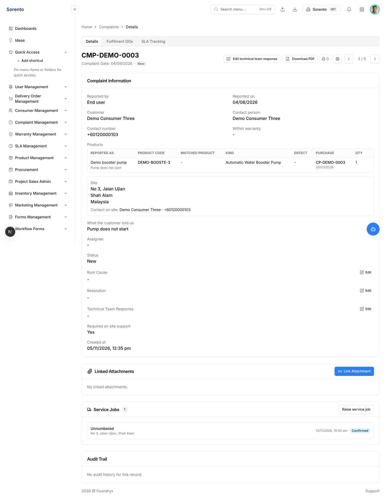
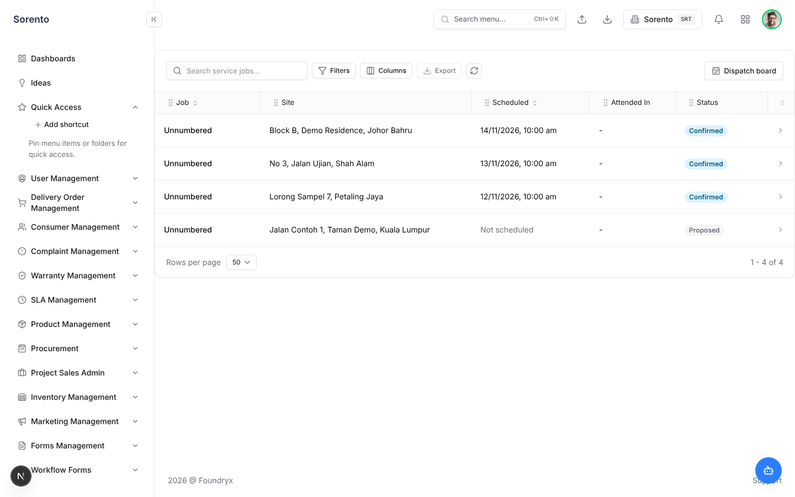
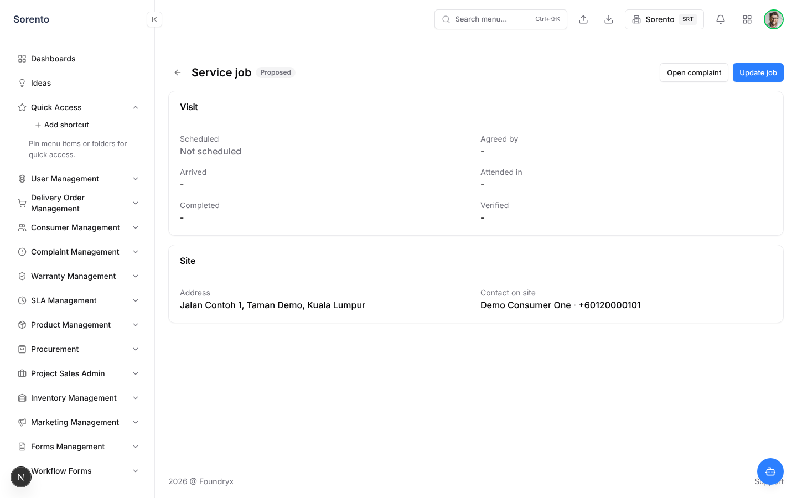
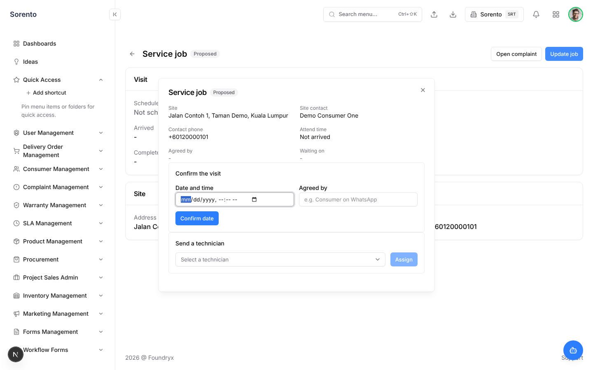
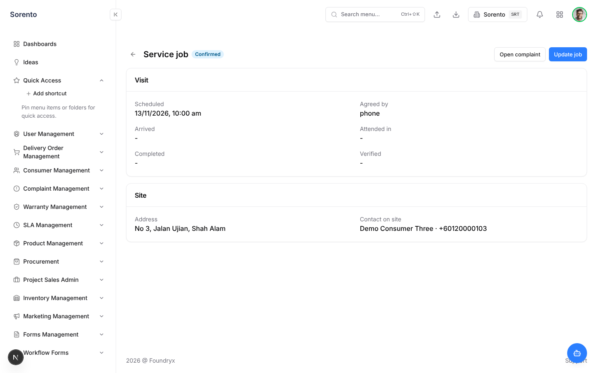
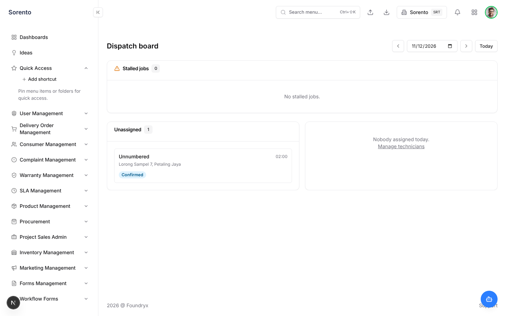
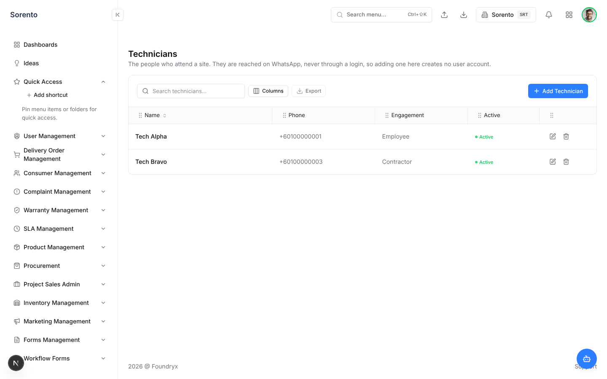
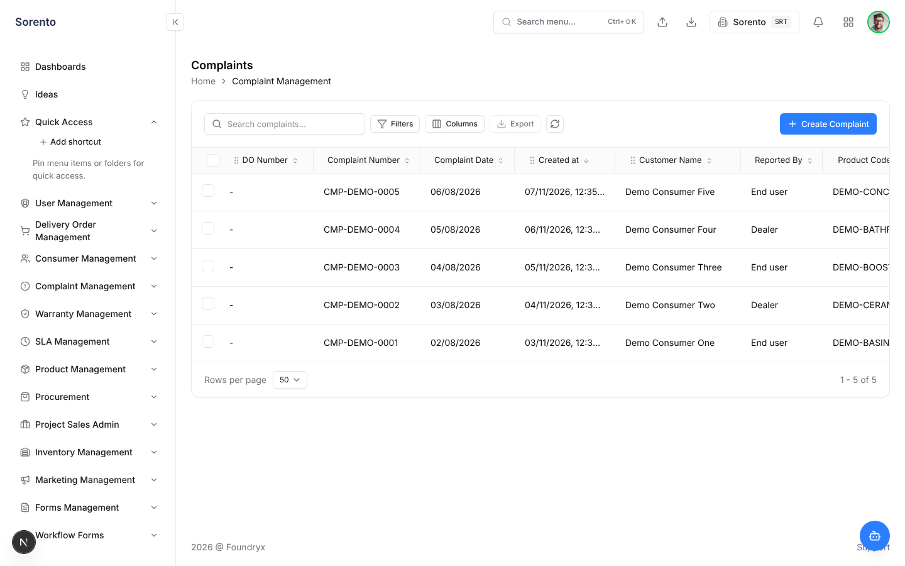
Flow, step by step
- CS opens a complaint. It has a Site: address, optional map pin, the contact on site and phone.
- CS presses Raise service job, or sets a Resolution marked "requires service job" and the job is raised by itself. The job copies the complaint's site.
- The job starts as Proposed: there is no agreed date yet.
- CS calls the customer, then Confirm date: date and time plus who agreed it (e.g. "Consumer on WhatsApp"). The job becomes Confirmed.
- CS picks a technician and presses Assign. The job shows in that technician's column on the dispatch board for that day.
- Technician leaves (On the way), reaches the site (Arrived; the attend time stops here), finishes (Completed). CS marks these today, because technicians have no login.
- CS checks the work and presses Verify. That is the end of the job.
- If the customer turns the visit down, or a revisit is needed, the job goes back to Proposed with a new assignment row. The history of the first try is kept.
Rules
| From | To | Button |
|---|---|---|
| Proposed | Confirmed | Confirm date (needs a date AND who agreed) |
| Confirmed | On the way | On my way |
| On the way / Confirmed | Arrived | Arrived (a missed "On my way" does not block) |
| Arrived | Completed | Complete |
| Completed | Verified | Verify (final) |
| Confirmed / On the way | Proposed | Customer rejected the visit |
| Arrived | Proposed | Revisit needed |
| Completed | Arrived | Reopen: work not accepted |
| Proposed / Confirmed | Cancelled | Cancel (final, shown grey: admin, not a failure) |
- Stalled = still Proposed and past its date. A Confirmed job past its date is not a stall (it has an agreed date and a technician).
- Auto-raise: a Resolution with "requires service job" raises one job. If a live job (not cancelled) already exists, it does not raise a second one. Clearing the resolution never deletes a job.
- A job is not tied to complaints only: it records its source (type + id), so later another record can raise one too.
- Job number format
SV{yy}/{mm}-is seeded, but the sandbox showed "Unnumbered": a fix for the port. - Built but no screen: visit charge (state + amount) and case cost lines (parts, transport). See gaps G6 and G7.
New tables
technicians, service_jobs, service_job_assignments, external_providers, case_cost_lines;
site columns on complaints; requires_service_job on resolutions.
P2 Warranty: is this covered?
Port second, size LFrom #163 slices S2 (warranty engine, Policy v15 seeded) and S7b (Warranty Configuration screens). New in the port (decision 3): CS enters purchase date + product kind on a complaint line and sees the verdict.
Screens
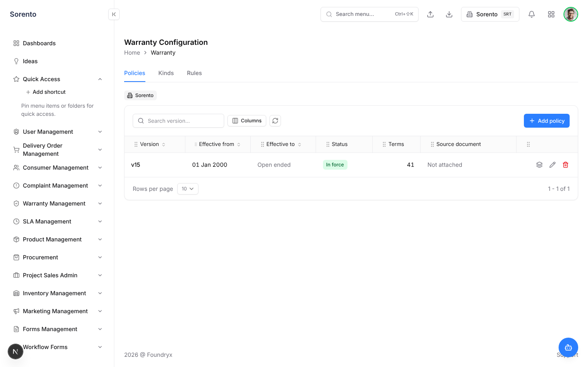
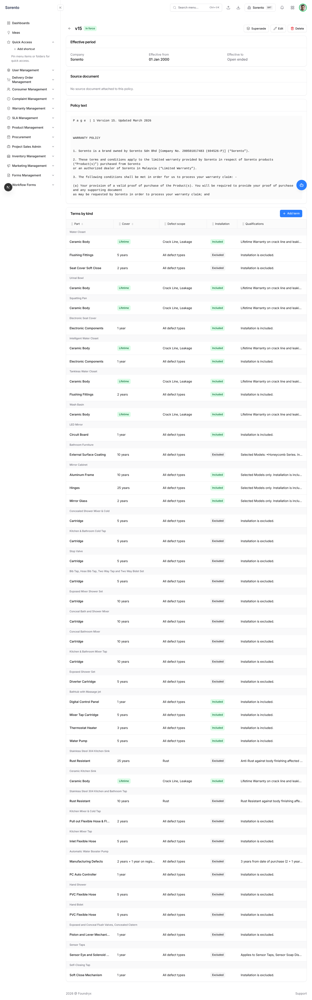
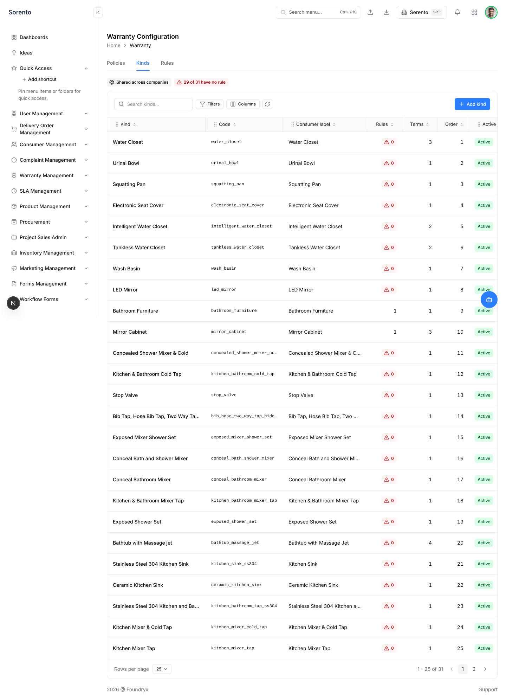
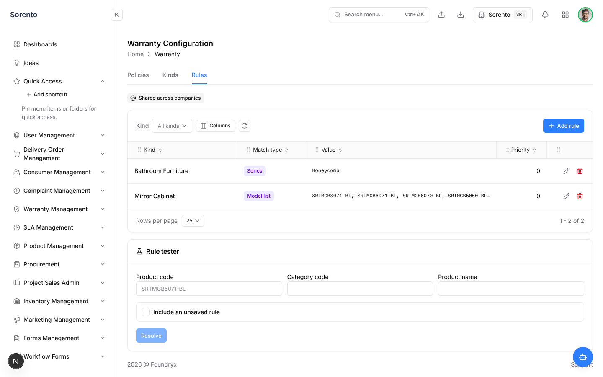
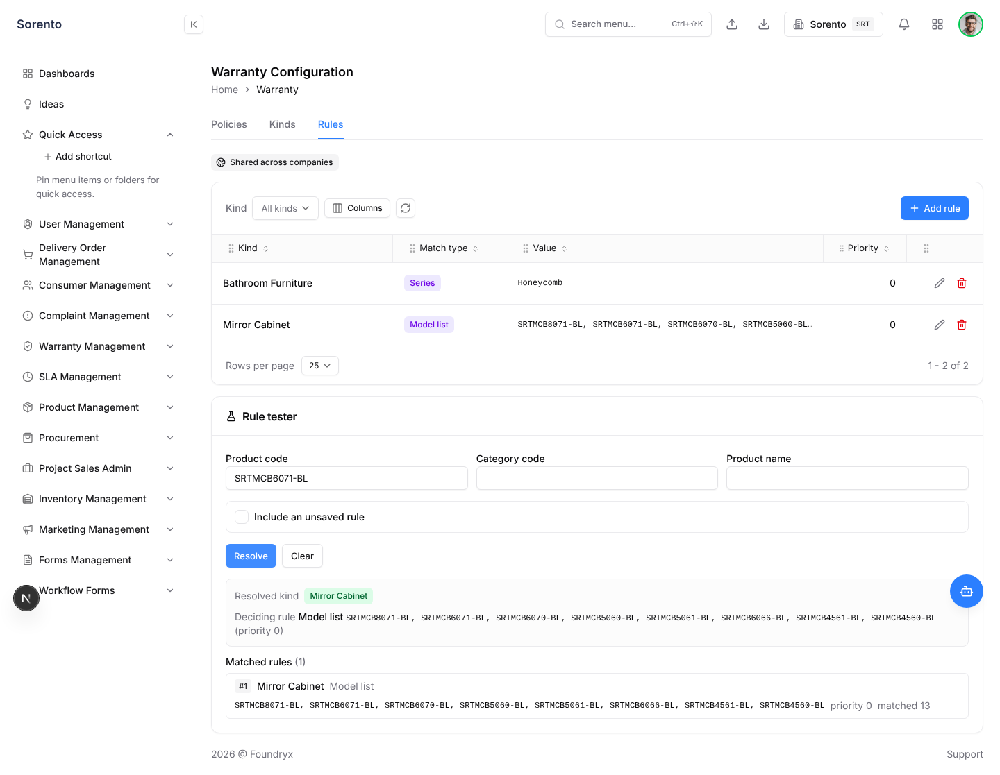
Flow
- Admin keeps the policy: Policies (versions), Kinds (product types the policy names) and Rules (which products are which kind).
- A new policy version is added with Supersede: it closes the old one the day before and the new one starts (the dialog shows both date ranges before you confirm).
- On a complaint line, the product's kind comes from the rules (or CS picks it), and the purchase date comes from the consumer's purchase (or CS types it, decision 3).
- The engine returns one verdict per covered part (a water closet has three parts, so three answers), and they are stored on the line.
Rules
| Verdict | Meaning |
|---|---|
| Covered | Inside the term; shows "Covered to dd/mm/yyyy inclusive". |
| Expired | Past the term's end date. |
| Defect not covered | The term lists the defects it covers and this defect is not one of them. |
| No term | The policy says nothing about this kind. |
| Unknown | Something is missing: no purchase date, no kind, or no policy in force on that date. Never shown as "not covered". |
- Judged against the policy in force on the purchase date, never today's policy.
- The purchase date and the last day of cover are both covered. Month maths clamps: 31/01 + 1 month = 29/02, not 02/03.
- A term with no defect list covers all defects. If the defect is not stated and the term is restricted, the answer is Unknown, not "not covered".
- Which kind wins when two rules match: priority, then the most specific match type, then the longest matched value, then kind code. Always the same answer.
- Policy dates may not overlap; a term is either lifetime or a number of months, never both; a kind in use cannot be deleted.
- Registration bonus months apply only when the consumer registered the purchase themselves (or via SMC / e-commerce). A purchase the system created from a complaint earns none.
- Clause 17 (residential only) is recorded but NOT enforced, because many complaints are project cases.
New tables
warranty_product_kinds, warranty_kind_rules, warranty_policies, warranty_terms, plus the stored verdicts (warranty_assessments).
P3 Consumers: who bought what
Port third, size M/LFrom #163 slice S2b (consumer profiles + purchase ledger) and Consumer 360. This is what the portal writes into.
Screens
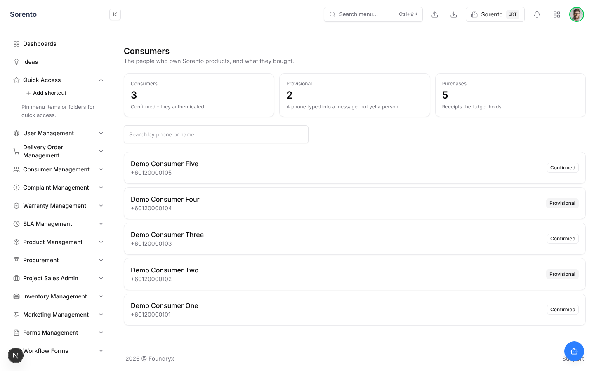
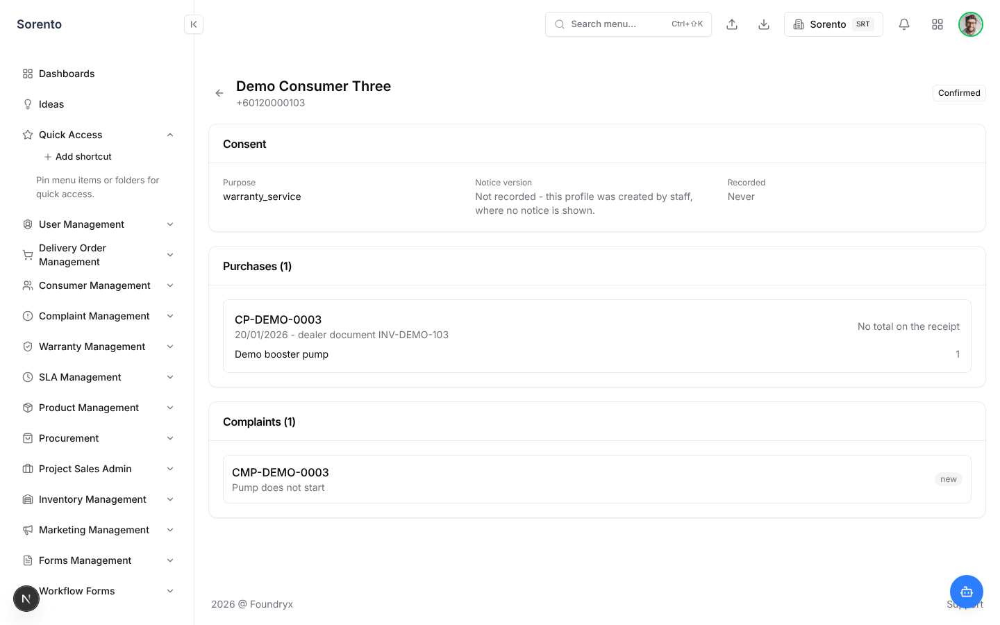
Flow
- A consumer is created when they lodge from the portal (P4). In P3 alone, CS sees consumers and their purchases.
- Each purchase has a date, the dealer and the dealer's document number, and product lines (product, kind, quantity).
- A complaint line points at the purchase line it is about, which is where the warranty engine gets the purchase date.
Rules
- One consumer per phone number (stored in +60 form). The same phone again finds the same person.
- A purchase is not entered twice: same dealer + same dealer document number = the same purchase.
- Consent is recorded with the notice version the consumer saw (PDPA). A profile created by staff shows "Not recorded".
- Deleting a consumer's personal data (anonymise) keeps the purchase, so warranty still works.
- Purchase value is visible only with its own permission.
New tables
consumer_profiles, consumer_profile_reviews, consumer_purchases, consumer_purchase_lines, consent_notices.
P4 Portal "Report a problem"
Port fourth, size LFrom #163 slice S3. A consumer reports a fault from the portal on their phone. Needs the Malay PDPA notice signed off and a Google Maps key. Screenshots are the built-in preview mode (no file is uploaded; the receipt reading is simulated). The shop name is replaced with a fake one.
Screens (phone width)
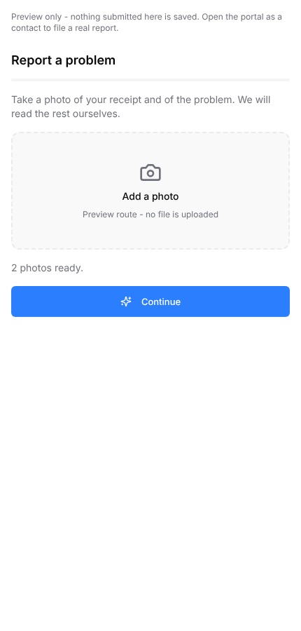
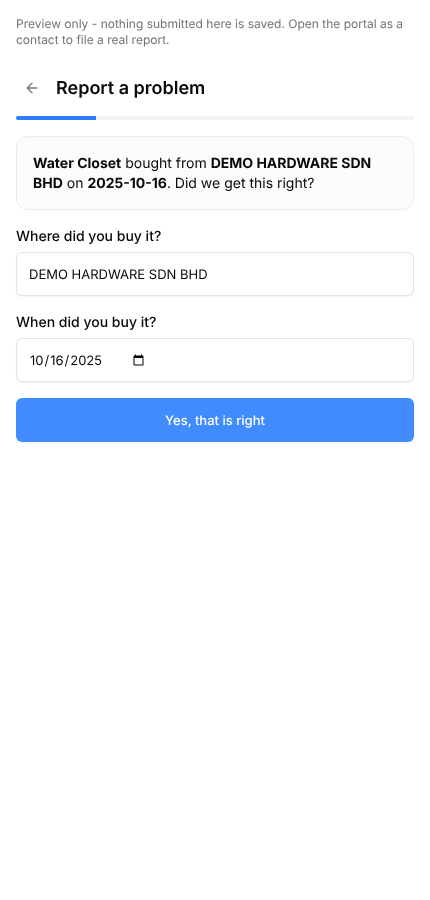
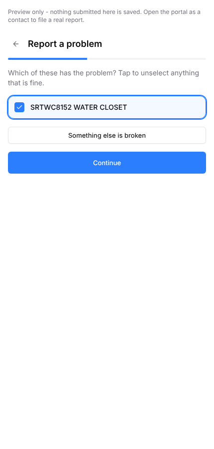
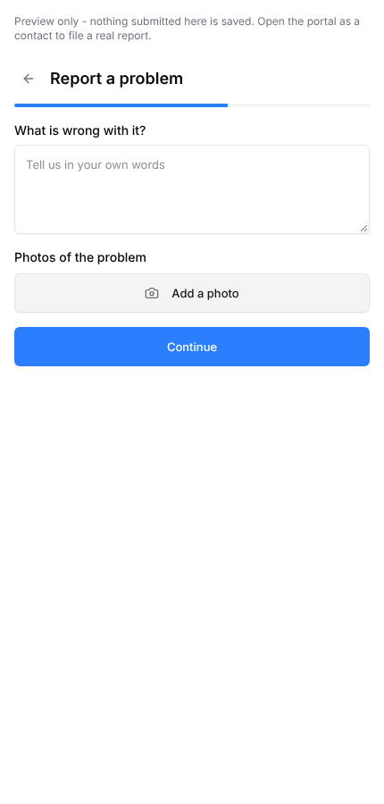
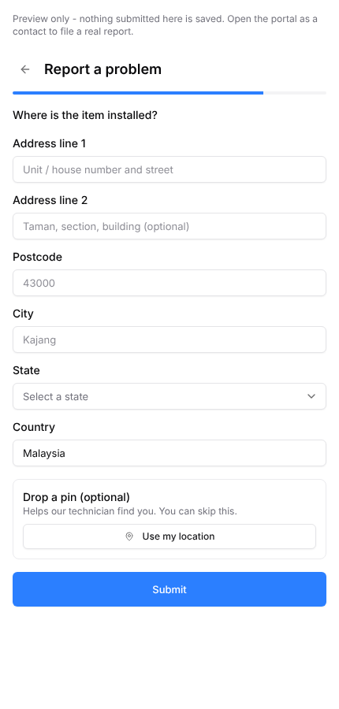
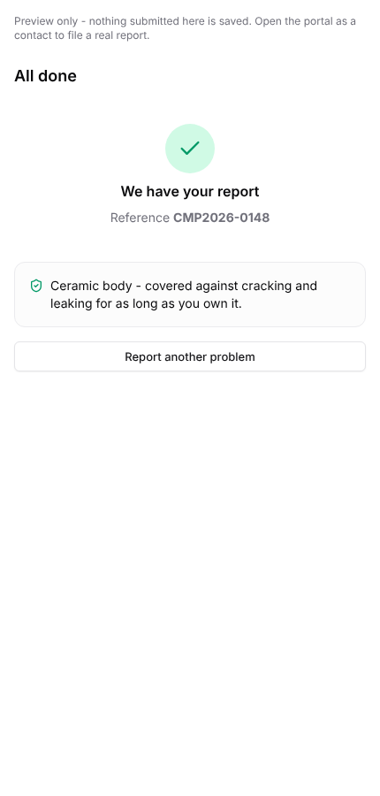
Flow
- The consumer opens the portal link (their phone number comes from the link, never typed) and taps Report a problem.
- Photos are stored first, then AI reads the receipt: shop, date, products. Dates are read as dd/mm/yyyy in code, not guessed by AI.
- The consumer confirms or corrects, picks the faulty product(s), adds a problem photo and the site address.
- Submit creates, in one go: consumer profile + consent, purchase, complaint (Reported by: End user) with lines, and the warranty verdicts.
- The complaint lands in the normal Complaints list for CS; from there P1 (service job) takes over.
Rules
- Never blocks the consumer: an unreadable receipt or unknown shop still files the complaint.
- The shop is matched to a dealer as "matched", "maybe" (CS confirms) or "not found". A near tie is never auto-matched.
- Product matching tries exact code, code without dashes, brand prefix, size suffix, family, then close spelling. If still unsure, the kind decides cover.
- The consumer is never asked for the product kind; it is worked out.
Deferred and dropped
| Piece in #163 | What it does | Status |
|---|---|---|
| S4a Waiting attribution | "Waiting on: customer / dealer / supplier..." banner on complaint, PR, stock inquiry; stamped on SLA events | Deferred rebuild on today's SLA code |
| S4 Notification spine | Notifications to contacts (not only users), Respond outbox, call logging | Deferred |
| S5 WhatsApp intake | A dealer's WhatsApp messages become a complaint | Deferred rebuild on today's chatbot (semantic parser rule) |
| S2a Upload checker | AI scores a photo against guidance, offers Retake / Use anyway | Deferred |
| F0-F2c Forms rewrite | New form engine, line statuses, portal submission of workflow forms | Dropped builder never finished; breaks form saves |
| Never built | Goods track / exchange / RMA, feedback survey, reporting, dealer view, technician portal | Not built |
What would you add?
Gaps compared with today's complaints module and how CS works. Mark each keep / later / no. Each line names the port it would go in.